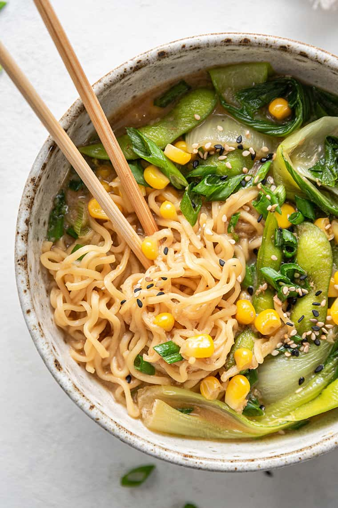

Sambar Recipe

What does Sambar mean
Sambar is a South Indian lentil and vegetable stew made with pigeon pea lentils, tamarind and a unique spice blend called sambar powder. It is a staple dish in South Indian homes and is also equally popular and loved by many.
A basic sambar recipe will have a mix or one or two types of vegetables along with lentils, tamarind, sambar powder and a few spices.
Ingredients
- Oil - 1 tbsp
- Onion - 1 large peeled and chopped roughly
- Tomato - 2 chopped
- Green Chilli - 2 slit
- Brinjal - 1 chopped
- Brinjal - 1 chopped
- Toor Dal / Tuvaram paruppu - 1 cup cooked
- Sambar Powder - 3 tbsp or to taste
- Coriander Leaves a small handful finely chopped
- Water as needed
Steps
- Heat oil and add in onion, chilli and tomato. Saute it for 2 mins.
- Add in all vegetables and saute it for 8 to 10 mins.
- Add in water, Cover it cook for 10 to 15 mins till the veggies is cooked.
- Now add in cooked dal, sambar powder, salt and jaggery and mix well.
- Simmer this whole thing for 15 to 20 mins.
- Simmer this whole thing for 15 to 20 mins.
- Pour this over the sambar and mix well.
- Add in coriander leaves and mix. Leave the pan covered till serving.
- That's the end serve it.